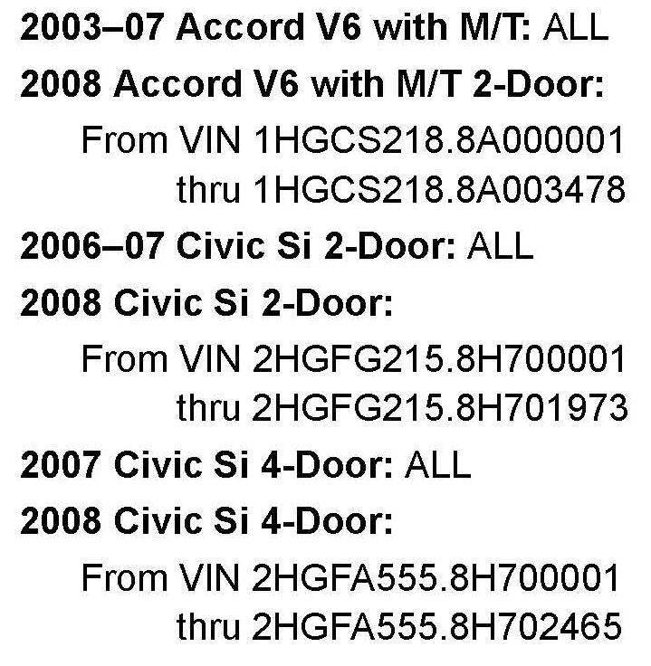
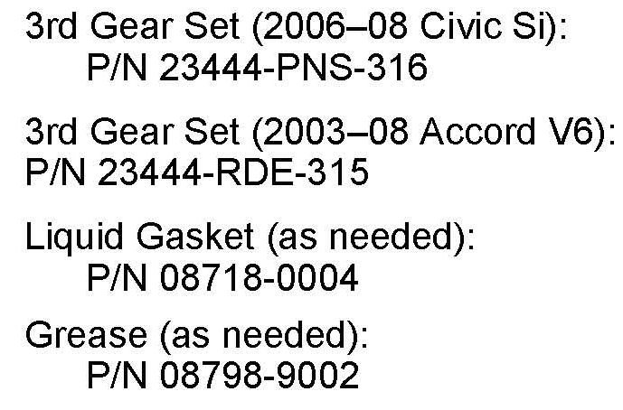
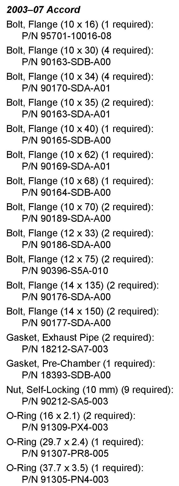
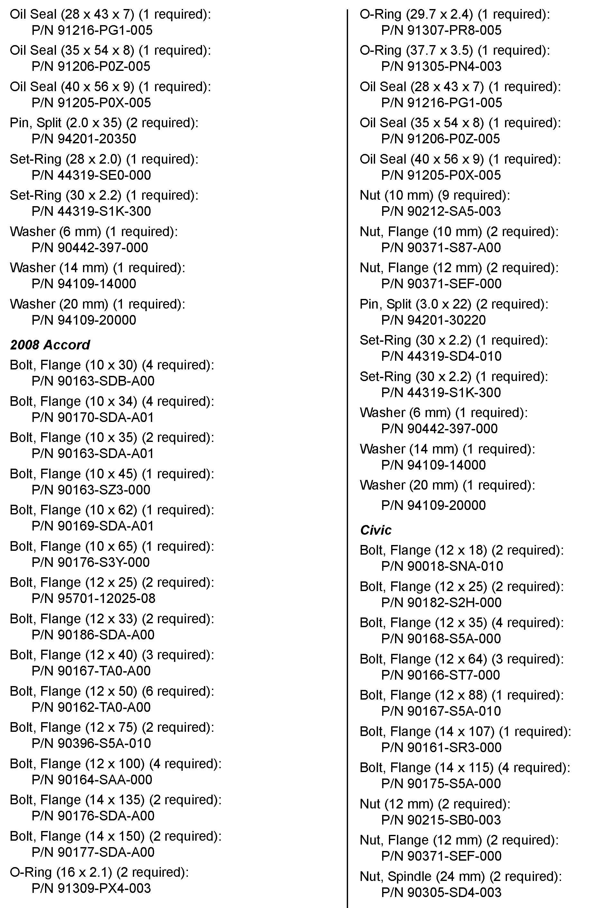
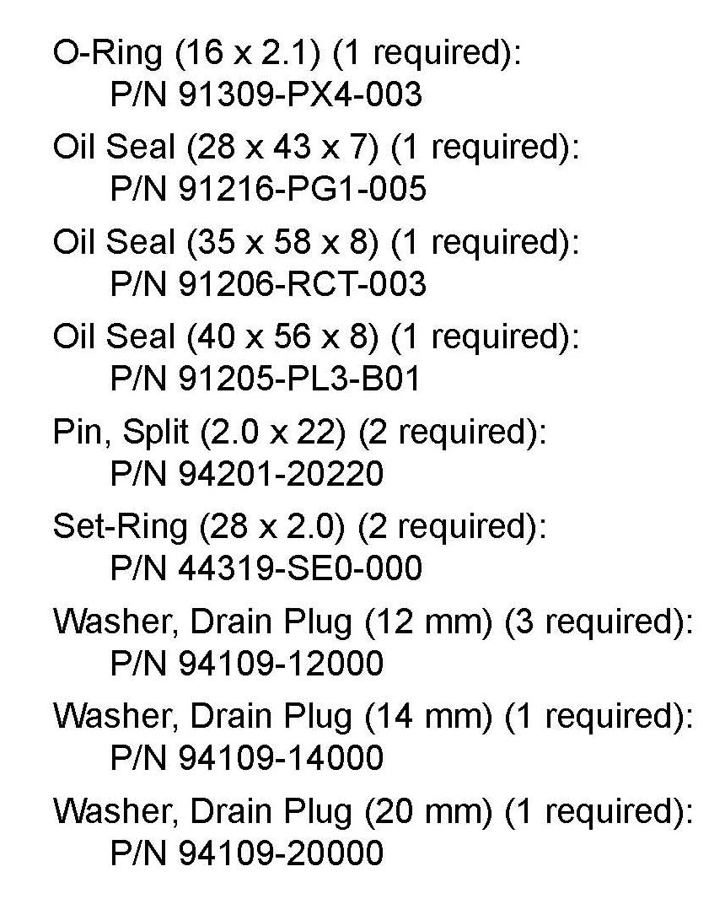
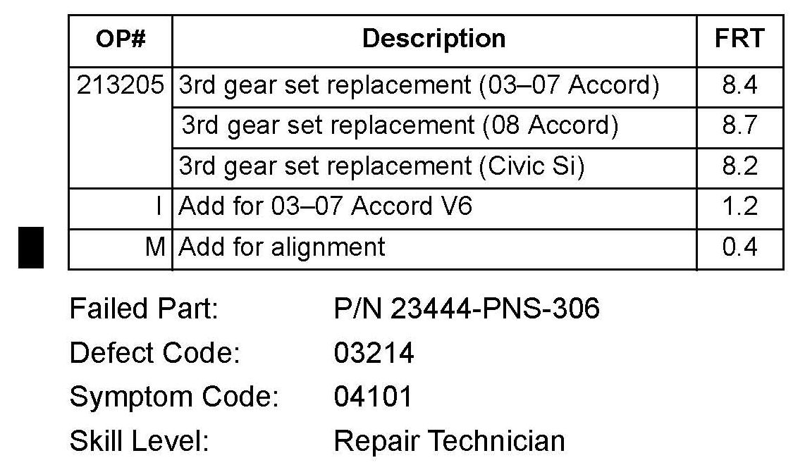

M/T - Grinds/Hard To Shift Into/Pops Out Of 3rd gear
08-020September 17, 2010
Applies To:
See VEHICLES AFFECTED
Transmission Grinds When Shifting Into 3rd Gear, Pops Out of 3rd Gear, or
Is Hard to Shift Into 3rd Gear
(Supersedes 08-020, dated July 18, 2008, to revise the information marked by the black bars and asterisks)
*REVISION SUMMARY
Under WARRANTY CLAIM INFORMATION, the flat rate time for wheel alignment was changed.*
SYMPTOM
The 6-speed manual transmission grinds when shifting into 3rd gear, pops out of 3rd gear, or is hard to shift into 3rd gear.
NOTE:
These symptoms can be intermittent and sometimes more noticeable in colder climates.
PROBABLE CAUSE
The transmission has a faulty 3rd gear synchronizer or 3-4 shift sleeve.
CORRECTIVE ACTION
Replace the 3rd gear set.

VEHICLES AFFECTED

PARTS INFORMATION
Additional Hardware



NOTE:
The following parts must be replaced when replacing the third gear set. Refer to the related service manual procedures for the locations of these parts.
REQUIRED MATERIALS
Honda Genuine M/T Fluid:
P/N 08798-9031
Accord: 2.6 qt. required
Civic: 1.8 qt. required
WARRANTY CLAIM INFORMATION

The normal warranty applies.
Failed Part: P/N 23444-PNS-306
Defect Code: 03214
Symptom Code: 04101
Skill Level: Repair Technician
DIAGNOSIS
Drive a known-good vehicle under the same conditions as the customer's complaint, and compare the shift quality. If the customer's vehicle has noticeable shift quality problems, replace the 3rd gear set.
NOTE:
It is not uncommon for there to be some resistance or notchiness when shifting into third gear.
REPAIR PROCEDURE
1. Remove the transmission:
^ Refer to Section 13 of the appropriate service manual, or
^ Online, enter keywords MANUAL REMOVAL, and select the appropriate Manual Transmission Removal procedure from the list.
2. Disassemble the transmission down to the mainshaft:
^ Refer to Section 13 of the appropriate service manual, or
^ Online, enter keywords TRANSMISSION DISASSEMBLY, and select the appropriate Manual Transmission Disassembly procedure from the list.
3. Replace the 3rd gear set:
^ Refer to Section 13 of the appropriate service manual, or
^ Online, enter keywords M/T MAINSHAFT DIS, and select the appropriate M/T Mainshaft Disassembly procedure from the list.
4. Reassemble the transmission:
^ Refer to Section 13 of the appropriate service manual, or
^ Online, enter keywords TRANSMISSION REASSEMBLY, and select the appropriate Manual Transmission Reassembly procedure from the list.
5. Reinstall the transmission:
^ Refer to Section 13 of the appropriate service manual, or
^ Online, enter keywords MANUAL INSTALL, and select the appropriate Manual Transmission Installation procedure from the list.
6. Check wheel alignment.

Disclaimer